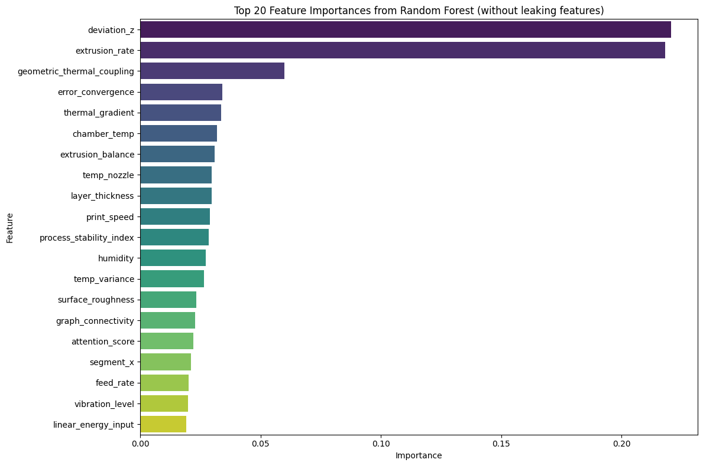
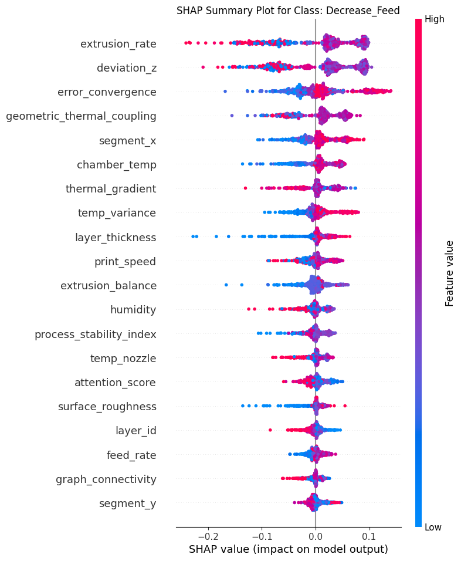
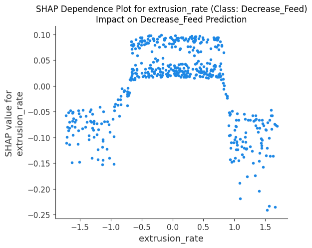
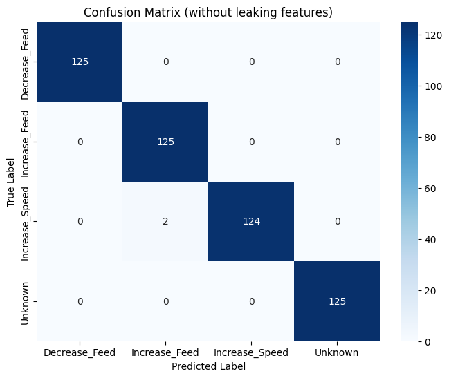
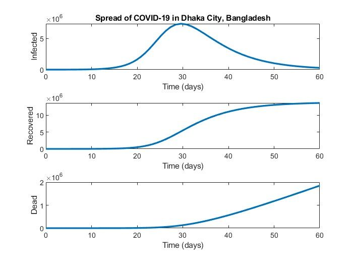

Predictive ML Framework for AM Quality Control
Developed a prescriptive ML framework that ensures print success of Additive Manufacturing (AM) parts by predicting necessary real-time process adjustments (Feed/Speed) with 99.6% accuracy, preventing defects before they occur.
Key Technical Highlights:
Leakage Prevention: To ensure real-time viability, I identified and removed "leaking" features like quality_score and dimensional_accuracy, which are only available after a print is finished.
Feature Engineering: Analysis revealed that Process Stability (38.9%), Temperature Variance (31.2%), and Vibration Levels (17.6%) are the primary drivers of quality.
Industrial Readiness: The model features a 0.8 ms prediction time, making it ideal for edge-computing deployments in Industry 4.0 environments.
Advanced Preprocessing: Used SMOTE to resolve class imbalance and SHAP analysis to map model predictions back to the underlying physics of 3D printing.




Sonar SLAM (Simultaneous Localization And Mapping)
Developed a cost-effective indoor mobile robot that creates 2D maps and performs navigation using ultrasonic sonar sensors instead of expensive LiDAR. It aims to implement SLAM algorithm with map adjustment technique to achieve accurate localization and mapping while minimizing complexity. The robot will also feature obstacle avoidance capabilities.


Autonomous Rough Terrain Robot
An autonomous vehicle is designed for rough terrains. It exhibits dynamic stability during locomotion over uneven landscapes. This system incorporates LiDAR mapping for navigation across various levels within civil infrastructure layouts. Employing a rocker-bogie mechanism ensures upright stability in challenging terrains and facilitates ascending inclines, such as stairs.


Spread of COVID-19 in Dhaka City
Developed a mathematical model to simulate the spread of COVID-19 in Dhaka City, Bangladesh, and to use numerical analysis techniques to solve the system of ODEs using MATLAB that describe the dynamics of the disease. The model takes into account factors such as population size, infection rates, recovery rates, and mortality rates, and it provides insights into how various interventions and control measures can affect the spread of the disease.

CAD Projects